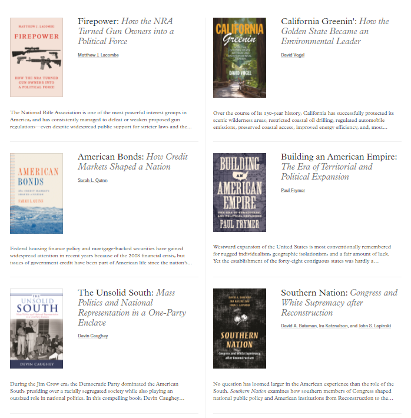

收录于合集
编者荐语：
一起来看看世界顶级大学出版社——普林斯顿大学出版社（Princeton University Press, PUP）出版的政治学与国际关系好书吧！
以下文章来源于普林斯顿读书汇 ，作者PUP China
 普林斯顿读书汇 .
普林斯顿读书汇 .
普林斯顿大学出版社 (Princeton University Press) 旗下唯一公众号。自1905年起，PUP已成为全球顶尖学术成果与思想的传播者。关注我们，获取最新英文书摘，领军学者访谈，作者讲座活动。
Editor’s Note
政治科学作为一个学术出版领域在普林斯顿大学出版社（Princeton University Press, PUP）拥有着最悠久的历史和最频繁的更新速度。不同于其他出版商， PUP的政治学出版物涵盖了该学科领域所有的研究方向和细分领域 ，包括政治学理论、国际关系、比较政治学和社会科学方法论等。
依托于与普林斯顿大学公共与国际事务学院的紧密联系，PUP出版了伊肯伯里、吉尔平等多位领域内具有全球影响力的普大教授的专著。 秉持着严谨的同行评审机制和对顶尖学术思想的不懈追求 ，PUP成功吸引到来自哈佛肯尼迪学院、乔治城大学等多所领域内领军学术机构学者的出版合作。据政治科学领域核心期刊 Political Science & Politics（政治科学与政治学）2011年的报道， 在该领域学者们倾向合作的出版社排名中，普林斯顿大学出版社位剑指榜首 。
我们在此为大家呈上 最全的普林斯顿政治学书单 ，从国际关系理论到世界局势的最新变化，从二战外交史到当今美国政治的分析……每一本都承载着创作者对领域的深入思考，每一套丛书都精彩纷呈。
国际政治
在国际关系与国际政治这个二级学科中，普林斯顿大学出版社的读者和出版偏好排名第一。这个领域的书单作者中包含了许多最负盛名的领域开拓者和理论贡献者，例如国际关系理论大师伊肯伯里（G. John Ikenberry）、新自由制度主义奠基人基欧汉（Robert O. Keohane）、国际政治经济学代表人物吉尔平（Robert Gilpin）。
点击下图直达本书购买页
After Hegemony: Cooperation and Discord inthe World Political Economy
本书是自由制度主义理论权威罗伯特·基欧汉的代表性著作，也是迄今为止对发达资本主义国家间合作问题进行研究的最为全面、最具影响力的作品。本书分析了世界政治经济中合作得以发生的国际制度（或者国际机制）的作用，以及随着美国霸权的衰落，这些国际机制的演变情况。
点击下图直达本书购买页
After Anarchy: Legitimacy and Power in the United Nations Security Council
本书是2008年国际研究协会获奖之作，聚焦于国际组织与国际法的核心问题。本书以联合国安理会审查机制为例，探讨了合法性获取与权力行使、主权国家与国际组织之间的相互作用。
点击下图直达本书购买页
Power and International Relations: A Conceptual Approach
权力的概念在国际关系思想史上经历了怎样的变化？本书从现实主义、新自由主义和建构主义这三大流派的学术史进行了探索和分析。作者回顾了有关“社会权力”理论的文献，并对国际关系中权力研究的学术脉络进行了讨论。
点击下图直达本书购买页
How Statesmen Think: The Psychology of International Politics
本书由国际政治心理学研究领域的领军学者罗伯特·杰维斯教授创作，是他四十多年来研究生涯的集大成之作。本书阐述了决策者在做出外交政策和国家安全判断时所受到的情绪、期望等心理因素影响，是国际关系领域的学生和学者不可或缺的读物。
点击下图直达本书购买页
Small Wars, Big Data: The Information Revolution in Modern Conflict
在过去的60年里，军事冲突和战争的方式发生了翻天覆地的变化。基于大量案例数据，本书对恐怖主义、内战、外国干预等现代冲突的方式进行了研究，为如何更好地制定战略并取得胜利提供了突破性的视角。
政治理论
在政治学理论这个二级学科中，普林斯顿大学出版社同样拥有非常耀眼的作者团队，包括政治心理学领域开拓者杰维斯（Robert Jervis）、“社会资本”概念的提出者帕特南（Robert D. Putnam）、定量社会研究方法论专家加里·金（Gary King）等。
点击下图直达本书购买页
Game Theory for Political Scientists
博弈论在政治分析中的作用一直以来被低估，本书创新性地将博弈论运用到国际关系、政治经济学和比较政治学的研究中，是一本政治科学博弈论的必读入门手册。
**
**
点击下图直达本书购买页
Leadership and the Rise of Great Powers
传统的现实主义理论对国家间行为的逻辑和利益取舍作出了解释，却在大国崛起和国际秩序的转变上兴致缺缺。清华大学阎学通教授在本书中提出道义现实主义理论，从政治领导力的维度对大国崛起和衰落进行了分析。
点击下图直达本书购买页
International Political Economy: An Intellectual History
本书是权威的国际政治经济学领域思想史，首次全面阐述了国政经的发展历史、核心问题、学术流派，以及学者们在应对日益复杂和相互依存的世界经济所带来的挑战时所采取的不同研究方式。
点击下图直达本书购买页
Economic Statecraft: New Edition
本书创造性地对“经济方略（Economic Statecraft）”这一理念进行了讨论，并用它挑战了外交政策中经济工具并无作用的传统认知。普林斯顿大学教授David Baldwin从经济学、政治学、心理学等角度解释了经济治国术的效用，重新定义了各国如何评估战争与和平的关键选择。
点击下图直达本书购买页
Political System and Change: A World Politics Reader
这本作品集是理解第三世界政治发展的经典之作，其中的许多文章都衍生成为比较政治学研究中著名的里程碑式书籍。

经典套系
Princeton Studies in International History and Politics
普林斯顿国际历史政治大视野系列
普林斯顿国际历史政治大视野系列丛书出版国际关系史方面的杰出著作。该系列立足于国际关系领域的核心问题，汇集了其他社会科学学科的见解，从历史的维度探讨了战争与和平、政权更迭、安全政策、外交战略、国家与市场的互动以及全球权力平衡等学术界的重要关切。
点击下图直达本书购买页
Who Fights for Reputation: The Psychology of Leaders in International Conflict
本书是政治心理学和美国外交史的最新力作，分析了为什么一些政治领导人比其他人更愿意使用军事力量来捍卫自己的声誉。通过对三位美国总统任期内外交政策危机的个案研究，作者对传统上“鹰派总是比鸽派更有可能为名誉而战”的说法进行了有力反驳。
点击下图直达本书购买页
Roosevelt and the Munich Crisis: A Study of Political Decision-Making
在二战史上，美国总统罗斯福在慕尼黑事件到珍珠港事件期间的对外政策意图一直是国关史学者们争论的焦点。本书将目光投向国内政治背景对总体外交政策决策的影响上，对罗斯福在慕尼黑事件之后的政策提出了新的诠释。
点击下图直达本书购买页
The Moral Purpose of the State: Culture, Social Identity, and Institutional Rationality in International Relations
为什么文艺复兴时期的意大利城邦发展出一套“演说式”的外交体系，而专制主义的欧洲国家却依赖于国际法和“旧外交”?本书以建构主义的视角回顾了国际制度的发展，指出了各国不同的文化和历史背景与其宪法结构和制度实践的因果联系。
点击下图直达本书购买页
Producing Security: Multinational Corporations, Globalization, and the Changing Calculus of Conflict
国际贸易与和平的相互作用一直以来为国关领域的学者们所探讨。本书作者对传统研究所关注的“贸易对安全的影响”进行了批判。本书指出，跨国公司生产的全球化导致了全球安全环境的一系列变化，生产的地理分散是大国之间实现和平的重要力量。
点击下图直达本书购买页
From Wealth to Power: The Unusual Originsof America’s World Role
是什么将富裕国家变成世界强国？本书以美国为例，聚焦国际政治研究中的重要问题——新兴大国的崛起。与现实主义的国际关系理论向印证，作者指出，在国家经济实力的增长时，总统和内阁就会试图增强国家在海外的政治影响力。
 **
**
** 普林斯顿美国政治经典研究系列

本系列出版的书籍堪称业内典范，既包括在该领域内顶尖学者们关于传统美国政治研究的重磅专著，又汇集了学术界新星学者跨越时代、方法论和分析领域所写就的创新性论著，极大地拓展了美国研究的深度和广度。
点击下图直达本书购买页
White Flight: Atlanta and the Making of Modern Conservatism **** _ ****_
在对现代美国种族政治的研究中，本书作者解释了亚特兰大等地“白人逃亡”的成因和后果，并发现种族隔离主义者的抵抗虽然没能够阻挡住民权运动，但却成功维持住了种族隔离的世界，并以更巧妙、更强大的形式对其进行“完善”。
点击下图直达本书购买页
Identity Crisis: The 2016 Presidential Campaign and the Battle for the Meaning of America ****
四年之前，特朗普的当选震惊了全世界。本书提出， 决定成败的因素在候选人产生之前就早已存在。这场看似打破了所有政治规则的大选实际上并不令人惊讶。人们基于身份认同的政治为这一切打下了根基。
点击下图直达本书购买页
Polarized: Making Sense of a Divided America ****
美国是个分裂的国家。实际上，这种情况已经持续了一段时间，而且正愈演愈烈。本书基于广泛的历史数据和对政治极化现象的统计测量，追溯了美国民众是如何从上世纪60年代开始逐渐走向两极分化的。
点击下图直达本书购买页
Changing the World: American Progressives in War and Revolution ****
一战后，由美国进步主义者领导的国际妇女和平与自由联盟成立，其坚信世界和平对于经济和社会的公平公正不可或缺。 本书回顾了美国进步主义运动的国内和国际背景，展示了他们开辟战后新的政治和国际关系的历程。
点击下图直达本书购买页
Deep Roots: How Slavery Still Shapes Southern Politics _ ****_
尽管在过去的150年中，美国社会发生了巨大变化，但南方仍然保持着坚定的保守态度。本书表明，南方白人根深蒂固的观念是该地区蓄奴历史的直接结果。书中展现了这些社会观念是如何在产生该观念的政策被去除之后仍长期存在的。
点击 “阅读原文” ，直达 普林斯顿政治学专区！
- END -